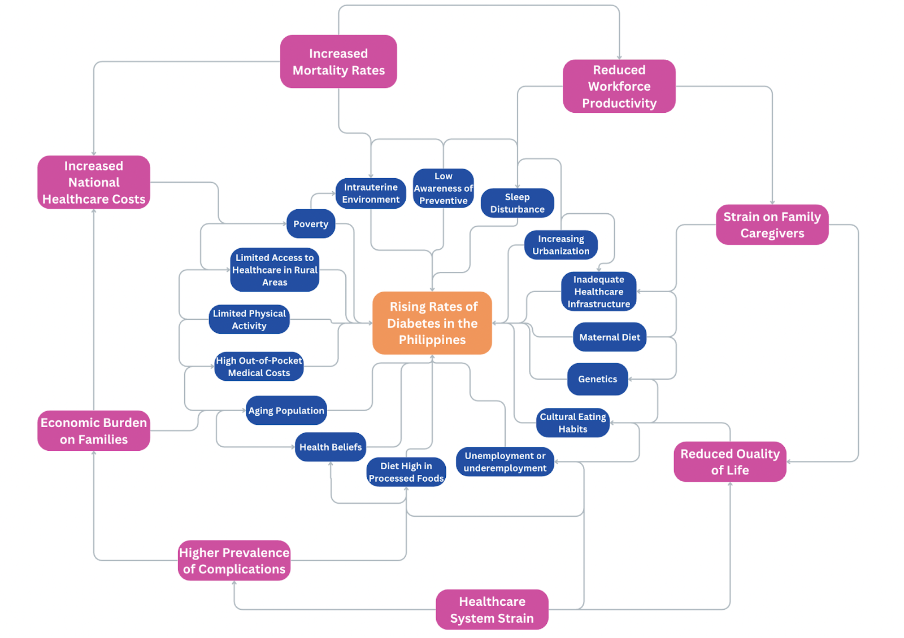

Population & Demographics
As of 2024, the total population of the Philippines is estimated to be 118,277,063 people. According to the CIA World Factbook, the ethnic composition is primarily Tagalog (26%), followed by Bisaya/Binisaya (14.3%) and Ilocano (8%) as of 2020. Other significant ethnic groups include Cebuano (8%), Illonggo (7.9%), Bikol/Bicol (6.5%), and Waray (3.8%). Those classified as other local ethnicities account for 18.5%, while foreign ethnicities represent 0.2%. In terms of language, Tagalog and Bisaya are the primary native language groups, with Tagalog spoken by 39.9% of the population and Bisaya/Binisaya by 16%. Other notable languages include Hiligaynon/Ilonggo (7.3%), Ilocano (7.1%), and Cebuano (6.5%). The official languages are Filipino (based on Tagalog) and English, along with eight recognized major dialects (CIA, 2020). The Philippines is predominantly Roman Catholic, with 78.8% of the population identifying as such. Muslims make up 6.4%, while Iglesia ni Cristo accounts for 2.6%, and other Christian denominations and religious affiliations comprise about 12.1% (CIA, 2020). Rooted in Catholicism introduced during the Spanish colonial period, Filipino culture profoundly shapes societal norms and values. Many Filipinos hold a deep sense of national identity shaped by their long struggle for independence, but their loyalty often lies with family, local communities, and provinces. This strong sense of community emphasizes collective interests and pride in family and local traditions. Interactions are often shaped by age and social status, with terms like "kuya" and "ate" used to show respect for elders. The concept of "hiya," or saving face, emphasizes social etiquette and the value of hospitality. Multi-generational family structures highlight a strong focus on respecting elders. While traditional values remain important, modern influences are changing practices, especially in dating and marriage, where individual choice is becoming more accepted (Mosaica, 2017).
Health Challenges
Infectious Diseases
Infectious diseases continue to be a significant health challenge in the Philippines, heavily contributing to mortality and morbidity, particularly among vulnerable populations with limited access to healthcare resources. Diseases such as tuberculosis, dengue fever, and diphtheria remain prevalent, compounded by recurring outbreaks of polio and measles. Factors such as the country's tropical climate, poor sanitation, and insufficient access to clean water exacerbate the spread of these illnesses. Natural disasters, including typhoons and floods, further facilitate the transmission of waterborne and vector-borne diseases, placing additional strain on the healthcare system. Tuberculosis is the leading infectious disease, with the Philippines ranking fourth globally in incidence; approximately one million Filipinos suffer from active tuberculosis, resulting in nearly 70 deaths daily. Another pressing concern is dengue fever, which led to a national epidemic declaration in 2018, with over 350,000 reported cases and 1,407 deaths. These diseases underscore the urgent need to address social and environmental determinants contributing to high infection rates.
Maternal and Child Health
Maternal and child health remains a critical issue, as the healthcare system struggles to address preventable deaths effectively. According to the United Nations Population Fund (UNFPA), 2,400 women die annually in the Philippines from pregnancy-related complications, many of which are avoidable. This issue is compounded by a high under-five mortality rate of 27.5 deaths per 1,000 live births, as reported by UNICEF. Contributing factors include low immunization rates, inadequate access to clean water and sanitation, and widespread poverty, particularly in rural and underserved areas. These challenges highlight systemic gaps in healthcare access and quality, emphasizing the need for stronger maternal and child health interventions to safeguard the well-being of women and children.
Non-Communicable Diseases (NCDs)
Non-communicable diseases (NCDs), such as cardiovascular diseases, diabetes, cancer, and chronic respiratory conditions, are the leading cause of death in the Philippines, accounting for 70% of mortality. Urbanization and lifestyle changes, including unhealthy diets and reduced physical activity, have significantly contributed to this trend. In 2022, ischemic heart diseases alone accounted for 18.3% of all deaths, with cancers and cerebrovascular diseases contributing 10.2% each. Economic barriers complicate access to healthcare and medications, particularly for lower-income populations, resulting in many undiagnosed or untreated cases. The economic burden of NCDs is immense, costing PHP 756.5 billion annually, with indirect costs from lost productivity nine times higher than direct medical expenses. The World Health Organization (WHO) recommends cost-effective measures such as salt-reduction policies, promoting physical activity, and implementing sin taxes to alleviate the NCD burden, improve life expectancy, and reduce healthcare costs.
Environmental Health
Environmental health challenges in the Philippines are severe and multifaceted, driven by issues such as air and water pollution, poor waste management, and deforestation. Air pollution, particularly in urban areas like Metro Manila, has worsened post-COVID-19 lockdowns. The country’s annual particulate matter levels (24 µg/m³) far exceed WHO's recommended limit of 5 µg/m³, contributing to respiratory illnesses like asthma and COPD. Water pollution and inadequate sanitation exacerbate the spread of waterborne diseases such as diarrhea and cholera. Additionally, the Philippines generates 2.7 million tons of plastic waste annually, with 20% ending up in the ocean, harming marine ecosystems and public health. Climate change intensifies these issues, as rising sea levels and frequent flooding lead to further environmental degradation. Manila, sinking at 20 mm per year, faces severe risks from recurrent flooding, while the Philippines ranks first globally in climate vulnerability according to the 2022 World Risk Index.
Disaster, Injury, and Violence
The Philippines is the most disaster-prone country in the world, as ranked by the 2023 World Risk Index. It is highly vulnerable to typhoons, earthquakes, volcanic eruptions, and floods, which are intensified by climate change. These disasters disrupt lives, damage infrastructure, and strain the economy, with recovery efforts often falling short. Safety concerns in regions like Mindanao, plagued by terrorism, robbery, and kidnapping, further compound the country’s challenges. Road accidents, firearm injuries, and falls disproportionately affect young men, particularly at night, when delayed medical care leads to higher fatality rates. Regional disparities in healthcare exacerbate these issues, as rural areas often lack the resources to provide timely and adequate treatment. Improved disaster preparedness, healthcare accessibility, and safety measures are urgently needed to mitigate these risks and ensure equitable healthcare services nationwide.
Focus: Rising Rates of Diabetes
To address the rising rates of diabetes in the Philippines, it is important to understand both the quantitative data demonstrating its prevalence and impact, as well as the qualitative experiences of those affected by the disease. This multifaceted approach provides a comprehensive view of diabetes as not only a significant public health challenge but also as a socio-economic and cultural issue that requires immediate and sustained intervention. Quantitatively, the statistics are alarming. The International Diabetes Federation (IDF) reports that approximately 3.7 million adults in the Philippines are living with diabetes, equating to about 7.1% of the adult population. This number is expected to rise due to factors such as increasing urbanization and shifts towards more sedentary lifestyles and diets high in processed foods. Diabetes is a leading cause of blindness, kidney failure, heart attacks, stroke, and lower limb amputation, and was the sixth leading cause of death in 2016. The economic burden is equally significant, with high out-of-pocket costs often leading to catastrophic expenditures and long-term financial strain (International Diabetes Federation, 2021).